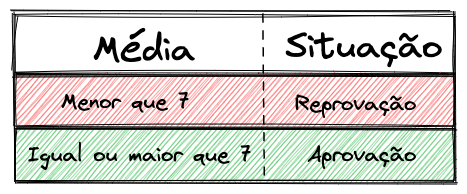
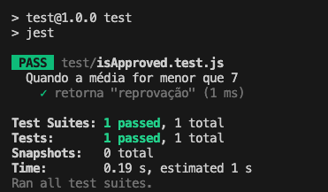
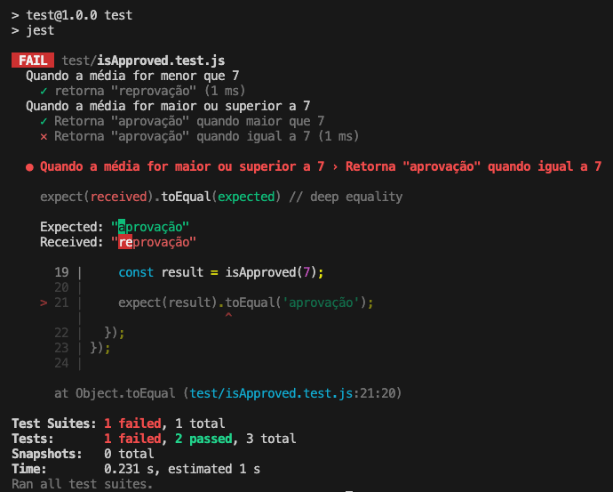

4.3 - Testes automatizados
Automatizar testes é uma necessidade tão presente no dia a dia dos times de desenvolvimento, que constantemente é tema de discussões e evoluções.
Hoje, testes automatizados são amplamente difundidos, com diversos tipos, técnicas e ferramentas disponíveis. Essa base sólida nos ajuda bastante durante o aprendizado, pois temos ferramentas consolidadas prontas para uso.
Introdução ao Jest
O Jest é uma das ferramentas mais populares para testes em JavaScript. Embora tenha sido criado inicialmente para projetos React, o Jest funciona muito bem em diversos tipos de projetos JavaScript, incluindo Node.js. Ele é focado em testes de unidade, mas também oferece suporte a testes de integração e ponta a ponta (E2E).
Uma das principais vantagens do Jest é sua configuração simples, execução rápida e suporte a testes assíncronos. Além disso, ele pode ser configurado para rodar automaticamente quando detecta mudanças no código, tornando o ciclo de desenvolvimento mais ágil.
OBS da IA
Alternativa mais moderna
- O Node tem test runner nativo estável (
node:test+node:assert, Node 20+):node --test. Vitest é outra alternativa moderna com API compatível com Jest. Jest 29 continua amplamente usado — o conhecimento é transferível.
Para o SAP CAP
- O CAP tem o
cds.test, que sobe o servidor do projeto (com SQLite em memória) dentro do teste e funciona com Jest, Mocha ounode --test. Em versões recentes ele é instalado pelo pacote@cap-js/cds-test.
Estruturando Testes com o Jest
Vamos criar uma função simples que verifica se uma pessoa foi aprovada com base em sua média de notas, seguindo a seguinte regra:

Agora, vamos configurar o nosso projeto:
- Crie uma pasta e dentro dessa pasta, execute os comandos:
mkdir test && touch isApproved.js && npm init -y
- Instale o Jest com:
npm install jest@29.7.0 --save-dev --save-exact
- Para habilitar o auto-complete de métodos do Jest, instale também o pacote de tipos:
npm install @types/jest@29.5.13 --save-dev --save-exact
Agora, vamos implementar a função isApproved, que recebe a média de notas e retorna se a pessoa foi aprovada ou reprovada:
// isApproved.js
function isApproved(gradeAverage) {
if (gradeAverage > 7) {
return 'aprovação';
}
return 'reprovação';
}
module.exports = isApproved;
Cenários de Teste
Precisamos cobrir três cenários principais:
- Quando a média for menor que 7, a resposta deve ser "reprovação".
- Quando a média for maior que 7, a resposta deve ser "aprovação".
- Quando a média for igual a 7, a resposta deve ser "aprovação".
Escopo Inicial dos Testes
Ao iniciar os testes no Jest, uma das primeiras funcionalidades que encontramos é o bloco describe(). Esse bloco desempenha um papel fundamental na organização dos testes, permitindo agrupar casos relacionados em um único escopo. Isso não apenas ajuda a manter o código de testes mais legível, mas também torna mais fácil identificar a área específica do código que está sendo testada.
O describe() aceita dois parâmetros principais:
- Uma string: Essa string é a descrição do grupo de testes, ou seja, ela deve descrever de forma clara o que aquele conjunto de testes está validando. Pense nela como o "título" do conjunto de testes.
- Uma função: Dentro dessa função, são definidos os testes relacionados ao comportamento que estamos validando. É aqui que cada caso de teste será detalhado.
Por exemplo, para testar um cenário onde a média de notas de um aluno é menor que 7, podemos criar dentro do arquivo test/isApproved.test.js o seguinte esqueleto de teste:
// test/isApproved.test.js
describe('Quando a média for menor que 7', function () {
//
});
Essa estrutura de describe() deixa nítido que estamos lidando com um cenário específico: notas que não atingem o valor mínimo de aprovação.
Definindo o Comportamento com test()
Depois de organizar os cenários de teste com describe(), é hora de especificar o que queremos validar para cada cenário. Isso é feito com o método test().
O test() também aceita dois parâmetros:
-
Uma string: Similar ao
describe(), aqui descrevemos o comportamento que será testado, mas de forma mais detalhada e específica. Essa descrição deve explicar qual é o comportamento esperado da função para o cenário definido. - Uma função: Nessa função, colocamos a lógica do teste propriamente dita, verificando se o código está se comportando conforme o esperado.
Continuando com o nosso exemplo, podemos agora adicionar um caso de teste que verifica se, quando a média é menor que 7, a função retorna a palavra "reprovação":
// test/isApproved.test.js
describe('Quando a média for menor que 7', function () {
test('retorna "reprovação"', function () {
//
});
});
Aqui, estamos dizendo que, no cenário onde a média é menor que 7, esperamos que o retorno da função seja exatamente a string "reprovação".
Adicionando Asserção
Agora que descrevemos o comportamento esperado, precisamos validar se a função está, de fato, retornando o valor correto. Para isso, utilizamos as asserções, que no Jest são fornecidas através do uso de matchers.
A asserção é onde validamos se o resultado gerado pelo código é igual ao que esperamos. No nosso caso, queremos garantir que, quando a média é inferior a 7, a função retorna "reprovação". Veja como isso funciona na prática:
// test/isApproved.test.js
const isApproved = require('../isApproved');
// describe('Quando a média for menor que 7', function () {
// test('retorna "reprovação"', function () {
const result = isApproved(4);
expect(result).toEqual('reprovação');
// });
// });
Aqui estamos utilizando o matcher toEqual() do Jest para afirmar que o valor retornado pela função isApproved() deve ser igual à string "reprovação" quando a média fornecida é 4.
De olho na dica👀: O matcher
toEqualé um dos diversos matchers disponíveis no `Jest. Você pode acessar a lista completa na documentação oficial do Jest.
Executando os Testes
Para executarmos os testes, altere o script de test no package.json para o seguinte:
"scripts": {
"test": "jest"
},
Pronto, agora só precisamos executar os testes com o comando npm test para termos a resposta do teste igual à imagem abaixo.

Testando os outros Cenários
Agora que já configuramos e validamos o cenário em que a média é menor que 7, podemos expandir nossos testes para cobrir os outros dois casos restantes:
- Quando a média é maior que 7, a resposta deve ser "aprovação".
- Quando a média é exatamente 7, a resposta também deve ser "aprovação".
Vamos adicionar esses testes no mesmo arquivo para garantir que todas as condições estejam sendo tratadas corretamente. O código a seguir demonstra como testar esses dois cenários:
// test/isApproved.test.js
const isApproved = require('../isApproved');
// describe('Quando a média for menor que 7', function () {
// test('retorna "reprovação"', function () {
// const result = isApproved(4);
// expect(result).toEqual('reprovação');
// });
// });
describe('Quando a média for maior ou igual a 7', function () {
test('retorna "aprovação"', function () {
const result = isApproved(9);
expect(result).toEqual('aprovação');
});
test('retorna "aprovação"', function () {
const result = isApproved(7);
expect(result).toEqual('aprovação');
});
});
Aqui estamos verificando duas situações diferentes, mas que devem resultar no mesmo comportamento: a função isApproved() deve retornar "aprovação" tanto quando a média é maior que 7, quanto quando é exatamente 7.
Analisando Resultados
Com os novos cenários implementados, você pode executar novamente os testes. Após a execução, você verá algo semelhante à imagem abaixo:

Note que, na execução dos testes, um deles falhou quando o valor da média passada é 7. Nesse caso, o retorno esperado seria "aprovação", mas a função está retornando "reprovação". O Jest fornece uma mensagem indicando a falha, o que facilita a identificação do problema.
Ao receber uma mensagem de erro como essa, podemos revisar a implementação da função isApproved(). Logo, identificamos que ela não está lidando corretamente com a média igual a 7. Para corrigir isso, basta ajustar a condição na função, como mostrado abaixo:
// isApproved.js
// function isApproved(gradeAverage) {
if (gradeAverage >= 7) { // Corrigimos aqui o sinal de igualdade para incluir o 7
// return 'aprovação';
// }
// return 'reprovação';
// }
// module.exports = isApproved;
Agora, ao executar os testes novamente, o erro será resolvido, e todos os cenários deverão passar corretamente.
Para consolidar os conceitos sobre testes, assista ao vídeo a seguir:
OBS da IA
CI/CD
- Testes automatizados rendem mais quando rodam sozinhos a cada pull request, antes do merge. Isso é a CI. Sem ela, os testes dependem de alguém lembrar de rodá-los.
- Veja IA.3 - GitHub Actions: o primeiro pipeline de CI.
Minhas anotações
Atalhos: ← → navegar · Ctrl K ou / buscar